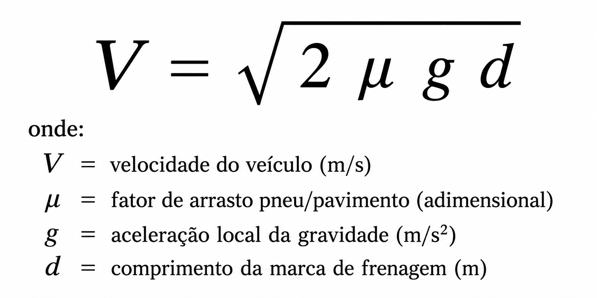

Velocidade pela marca de frenagem
PWA offline cálculo de velocidade pelo comprimento da marca de frenagem aplicando Método de Monte Carlo para tratamento estatístico

PWA offline cálculo de velocidade pelo comprimento da marca de frenagem aplicando Método de Monte Carlo para tratamento estatístico